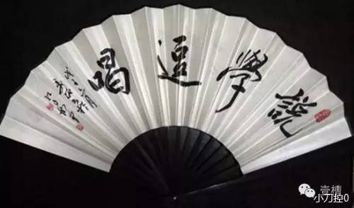
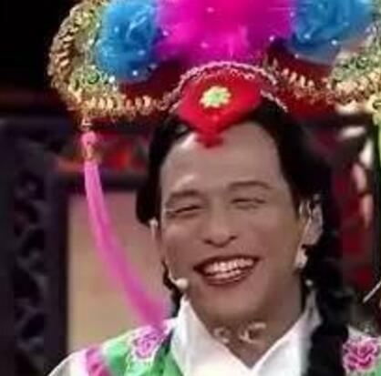
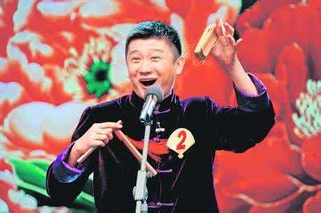

在传统上，相声艺人把相声的基本功细分为十三门：要钱、口技、数来宝、太平歌词、白沙撒字、单口相声逗哏、捧哏、群口、相声怯口/倒口柳活、贯口、开场小唱。下面介绍一些主要的技巧。
口技是优秀的民间表演技艺，是杂技的一种。起源上古时期，人们用于狩猎，模仿动物的声音，来骗取猎物获得食物。据历史文字记载，战国时期《孟尝君夜闯函谷关》的故事中，“鸡鸣狗盗”是最早将口技运用到了军事。到了宋代口技以成为相当成熟的表演艺术，俗称“隔壁戏”。从宋代到民国时期在杭州盛为流行，表演者用口、齿、唇、舌、喉、鼻等发声器官模仿大自然各种声音，如飞禽猛兽，风雨雷电等等。能使听的人达到身临其境。这种技艺，清代属“百戏”之一种。
2011年5月23日，口技经国务院批准列入第三批国家级非物质文化遗产名录。

数来宝，一种中国传统曲艺。流行于中国北方地区，来源是流落于民间的乞丐要钱的一种手段。一人或两人说唱。用竹板或系以铜铃的牛髀骨打拍。常用句式为可以断开的"三﹑三"六字句和"四﹑三"七字句，两句﹑四句或六句即可换韵。最初艺人沿街说唱，都是见景生情，即兴编词。后进入小型游乐场所演出，说唱内容有所变化。部分艺人演唱中国民间传说和历史故事，逐渐演变为快板书，与数来宝同时流行。
2014年11月11日，数来宝经国务院批准列入第四批国家级非物质文化遗产代表性项目名录。

